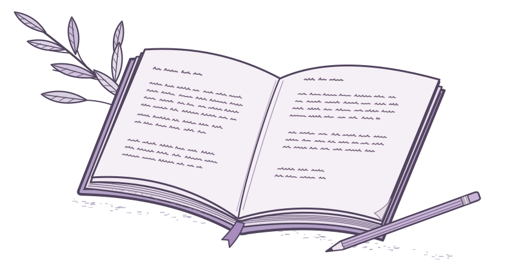

Skip to notes
Workspace
Session notes
Session only
Session notes
Practise documenting sessions with fictional clients.
New note

All notes
5
Practice workspace
·
Fictional data only
Cancel
Confirm
This demo needs JavaScript to keep notes in tab memory.